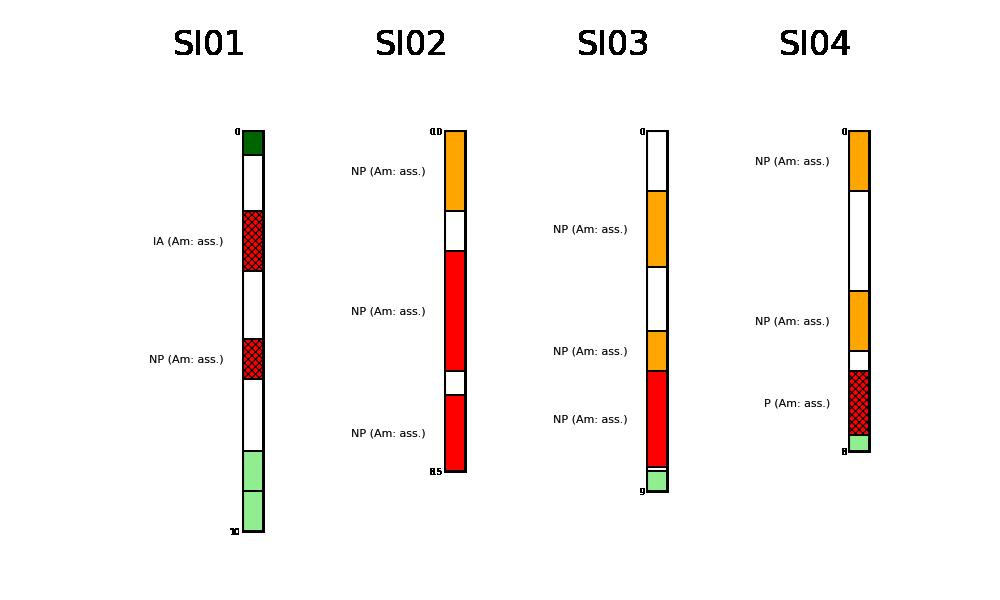

mplStrater: plot stratigraphic columns with python¶


This package allows to plot stratigraphic columns with python.
Passing to mplStrater:
some stratigraphic data stored in a
pandas.DataFramea
mplStrater.Legendobject
the package creates a series of mplStrater.strata.Columns objects
that can be plotted, all together or singularly, on matplotlib.axes. The columns
are plotted with the color and hatch scheme defined providing the legend object.

Output map of the example dataset.¶
The package also allows to plot singularly column contained in the dataset.

It allows to plot the single columns for closer inspection.¶
Packaged from a hardcoded script in quarantine in december 2021, by @giocaizzi.
Examples:
Code reference: